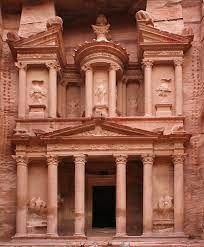

Petra

- The Greek name Petra (“Rock”) probably replaced the biblical name Sela.
- Excavations from 1958 on behalf of the British School of Archaeology in Jerusalem and, later,
the American Center of Oriental Research added greatly to knowledge of Petra.
- it is an unfinished tomb facade that during Byzantine times was used as a church